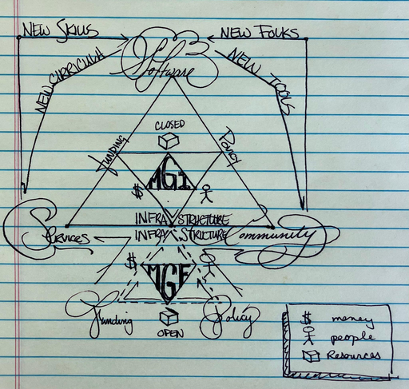

Executive Summary#
MGF Vision
Advance open, collaborative materials science innovation through community leadership, content, and training that increase open materials software, data, and research literacies.
The Materials Genome Foundation MGF is established - with funding through Pathways to Enable Open-Source Ecosystems NSF-POSE #2229690 - to increase access to materials science and manufacturing literacy. It builds off the open source successes of endorsed projects stemming from the [PyCalphad] ecosystem including [Kawin] and [ESPEI]. Materials science and manufacturing are facing increasingly complex engineering challenges that outpace traditional modes of research and development. Our proposed initiatives provide tools that support a diverse, inclusive materials communities practicing open science to address emerging, interdisciplinary engineering problems.
The open science movement has demonstrated power in fostering collaborations, reproducibility, and equity
. These successes are exemplified by programs like NASA-TOPS & LIGO while institutions like the NIH and USGS champion their own collaborative successes. Open science is becoming part of US federal policy with multi agency cooperation and mandates from OSTP for updated public access policies
Today, the White House Office of Science and Technology Policy (OSTP) updated U.S. policy guidance to make the results of taxpayer-supported research immediately available to the American public at no cost.
August 25, 2022 - White House Office of Science and Technology Policy
STP Issues Guidance to Make Federally Funded Research Freely Available Without Delay
The Materials Genome Initiative ushers in a new open information economy for materials science. Successful programs like the Materials Data Facility, the Materials Project, and PRISMS demonstrate the efficacy of open data in materials science. This culture shift indicates that the time is right for open collaboration in materials science. The MGF exists to support materials scientists with the tools and literacies required to practice open science. Our plan encourages a new culture that broadly disseminate materials software, data, experience, models, and research.

The Materials Genome Foundation will serve a complementary role relative to established funding, policy, and infrastructure efforts. The MGF augments traditional funding pathways with open science funding, and the culture will be develop through open governance and rigorous community management. We’ll build tools and infrastructure that connect the community and promote inclusive, diverse, open materials science.
The Materials Genome Foundation is prioritizing three goals to promote open materials science:
Fostering an Open Materials Science Community and Culture
Advancing the quality of open materials science tools
Provide training neceesary for an open materials science economy
More specifically, these goals are reflected in on-going MGF initiatives that include:
Community activities that increase the frequency of materials scientists meeting.
Technical support and management of endorsed open source materials science software.
Develop workshops that increase software literacies in materials science practice.
Create new texts for the next generation workface that align closer to modern roles.
These goals and initiatives will be acheived through a radically open approach to materials science that aligns more with open source software collaboration. These goals are designed to impact early career researchers that will operate in rapid, open, interdisciplinary research. The Materials Genome Foundation believes that a transparent, open approach will permit sustainable growth; it can adapt to the rapidly changing technical landscape of science.